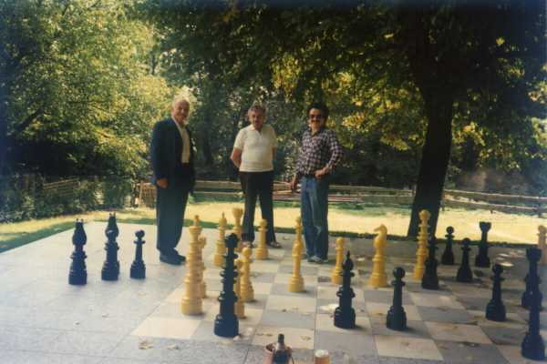

Josef Hauser, Siegfried Korb und Elmar Kohlhöfer (von links) nach der Einweihung des neuen Freilandschachs an der Gärtnerklause.
Vertieft ins Spiel: Hauser (links) gegen Kohlhöfer (rechts). Korb (Mitte) schaut kritisch zu.